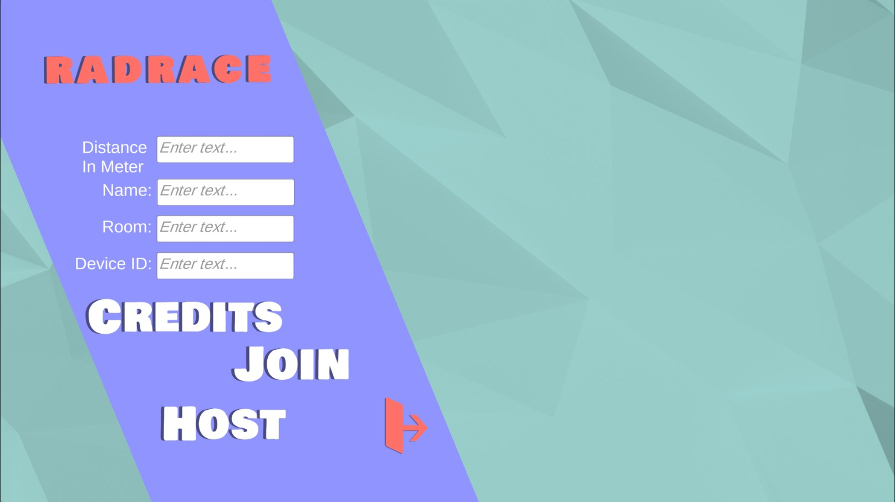
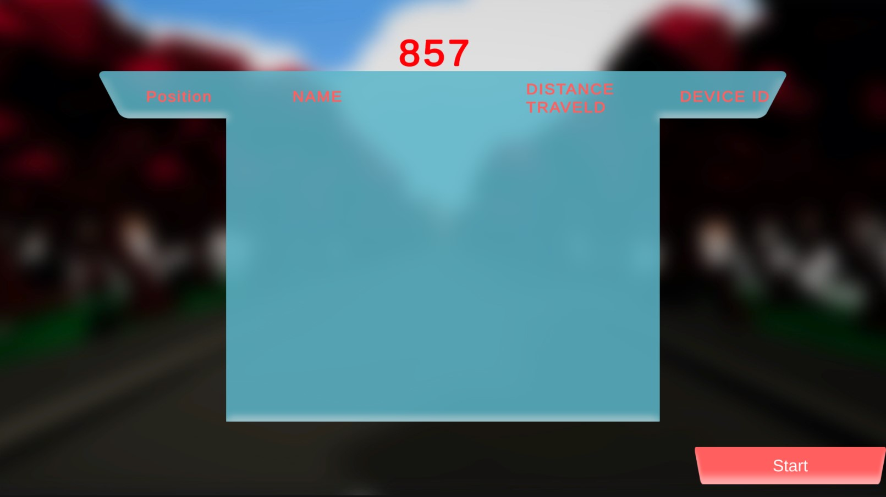
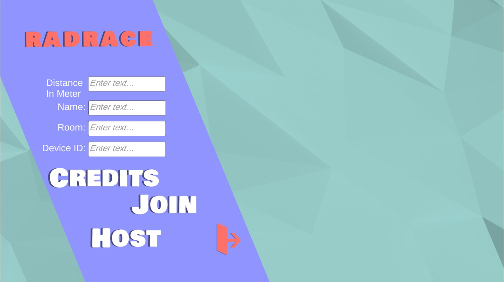
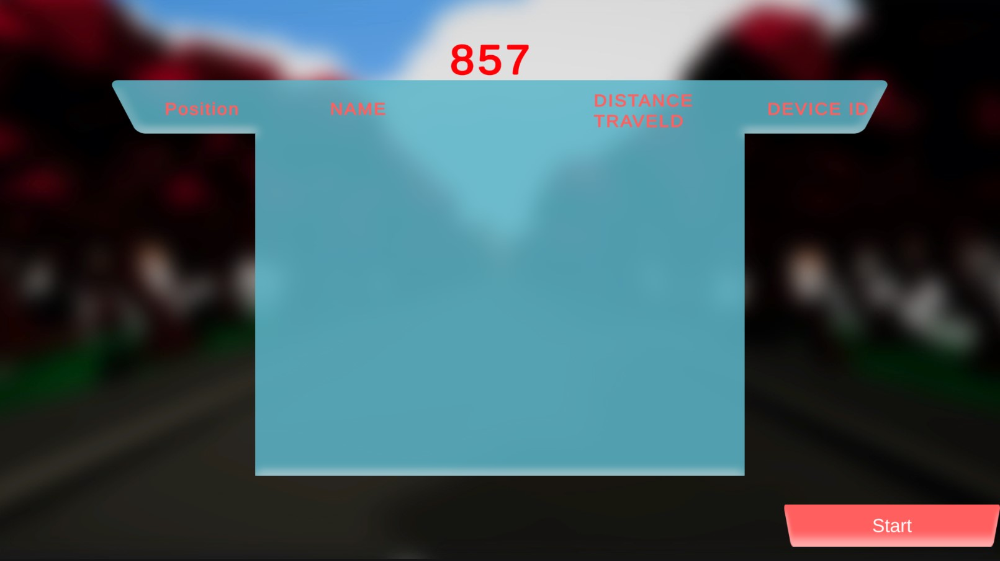

This game was made to encourage elderly to fitness. The idea is that you would ride a fitness bike
and that would be displayed
in an app on the mobile. it also was online, that way you could race againest other people. It used
a couple of Arduinos
and some sensors to use detect movement in the fitness bike and send it to the game. A total of 8
people were working on this project.
2 artists and 6 programmers.
In this project I worked on the sensor part with a classmate. It was my first time using C, so in
the beginning I had to grow accustomed to it.
It was a very steep learning curve but I enjoyed a lot. Afterwards I began working on the arduino
part which to be honest wasn't a very pleasant
experience. The text editor was annoying which slowed down my work speed a lot. In the end me and
the other classmate, which was also working
on the Arduino, pulled through and had everything working. But the game wasn't done yet. I then had
received the task of working on the game
in unity. In there I mostly did UI stuff. The experience I gained from this project was the most
valuable out of any other project. Mostly
because of the new programming language that I learned which was C.
RadRace
 



Info
C
Arduino
C#
Unity
Duration:~5 months
Status:Complete
Status:Complete